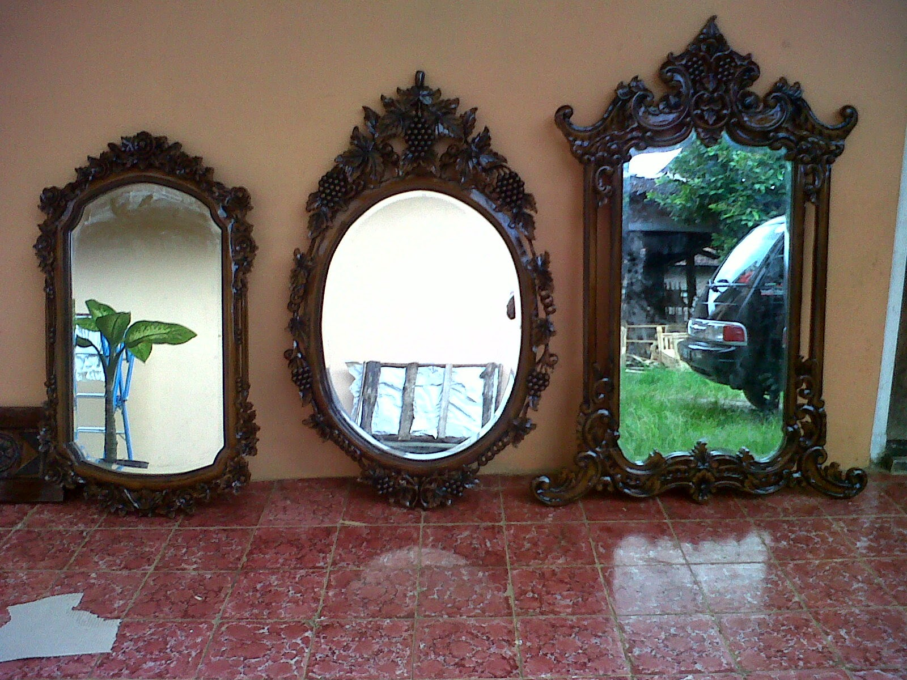

Kaca ialah salah satu elemen yang cukup penting pada sebuah bangunan baik untuk rumah tinggal, pertokoan, gedung bertingkat maupun multi use building. Kita kerap kali menemui material-material hal yang demikian pada gedung, kantor, industry bahkan rumah hunian. Berikut sedikit penjelasan yang dapat anda baca mengenai sebagai rujukan and ajika akan membangun rumah maupun daerah usaha.
Sekarang telah hadir pelbagai maca jenis kaca yang bisa dijumpai, setiap kaca memiliki fungsinya masing-masing. Bisa untuk system keamanan, estetika dan masih banyak yang bisa di temukan dari pemasangan kaca. Tipe kaca-kaca tersebut diantaranya yakni kaca tempered, kanopi kaca, kaca frameless, kaca cermin, railing kaca dan masih banyak macam kaca lainnya yang bisa anda dapatakan dan anda aplikasikan pada bangunan. Seluruh material tersebut bisa di aplikasikan harga sebuah hunian terlihat lebih indah nyaman dan juga aman. Berikut ini sedikit penjelasan mengenai beraneka tipe kaca dan fungsi kaca dan juga parket lantai kayu jati yang bisa anda dapatkan.
Distributor & Supplier Pintu Lipat Kaca Probolinggo
Saat ini, pilihan jenis kaca pelbagai dan bervariasi. Pintu lipat kaca diaplikasikan ketika ruangan dipakai untuk hal yang privacy. Anda bisa mencari model pintu lipat kaca tempered minimalis lainnya. Kini pasti, modelnya banyak cocok dengan yang Anda butuhkan.
Harga pintu kaca lipat Probolinggo frameless ini amat diberi pengaruh oleh ukuran lebar dan tingginya pintu. Dengan demikian, sinar matahari di siang hari bisa masuk ke dalam ruangan. Dan dengan adanya pintu kaca ini, keamanan semakin bagus. Sekarang, banyak kantor yang tidak lagi memiliki ruangan yang disekat dengan tembok dan dikala ini beralih dengan ruangan disekat dengan memakai kaca. Jadi, bukan cuma pintu saja yang berupa kaca, tetapi juga semua sekat ruangan.
Distributor & Supplier Kaca Shower
Kaca shower kini menjadi suatu hal yang banyak diminati karena banyak orang yang menginginkan sebuah kamar mandi yang memiliki fungsi selain keindahan yakni kenyamanan. Selain hal yang demikian kini dapat anda lakukan dengna mengaplikasikan kaca shower untuk kamar mandi anda. Jadi sistemnya jauh lebih praktis karena tidak perlu menyiapkan bahan sendiri untuk membikin sekat ruang.
Tak anda sedang membutuhkan kaca shower untuk kamar mandi anda, anda dapat langsung mengunjungi dis.or.id. Disana anda dapat memperoleh kaca shower yang berkwalitas dan harga yang juga terjangkau. Anda bisa buktikan sendiri.
Distributor, Supplier & Jasa Pasang Kanopi Kaca
Salah satu jenis kanopi kaca yang bisa anda aplikasikan pada atap ialah atap kaca skylight yang yakni kanopi kaca dalam format jendela horizontal atau kubah yang lazimnya ditempatkan di atap bangunan yang memiliki maksud untuk pencahayaan ruangan. Atap kaca skylight banyak dipakai pada rumah, gedung, kantor, café yang mengusung gaya modern untuk membikin efek cahaya yang dramatis pada ruangan bagian bawahnya serta memberi kesan modern pada bangunan. Sifat utama material bahan atap akrilik juga bisa disebut atap acrylic, ini yakni warnanya yang jernih tembus pandang. Tak cuma sekedar tembus pandang. Ada sebagian alasan kenapa Pintu Kaca Shower banyak dipakai salah satunya adalah kaca lebih kelihatan bersih dan rapi dan juga lebih gampang dalam perawatannya. Sekiranya tembus pandang, kaca menyerap sinar yang masuk sehingga semakin tebal kaca karenanya kian sedikit cahaya yang bisa melewatinya, maka sifat transparannya makin berkurang.|Di samping pintu kaca shower akan membuat kamar mandi kecil kelihatan lebih besar.
Tidak anda ketika ini sedang membutuhkan kanopi kaca, anda dapat langsung mengunjungi dis.or.id. Terdapat banyak kanopi dengan berjenis-jenis ukuran dan ketebalan yang bisa anda pilih sesuai dengan yang anda butuhkan. Bila itu, kanopi juga bisa melindungi mobil dan kendaraan lain anda. Jikalau fungsi utama kanopi sebagai pelindung untuk bangunan tersebut, pemasangan kanopi kaca juga bisa membuat bangunan menjadi tampak lebih cantik dan menarik, apalagi memakai konsep yang sama dengan konsep rumah minimalis. Sesudah kaca untuk atap kanopi cukup digemari. Disana anda akan memperoleh kanopi kaca yang layak dengan beragam ketebalan dan harga yang cukup relatif murah.
Jasa Maintenance Kaca
Jasa maintenance kaca ialah perusahaan yang akan menolong agar gedung perkantoran Anda kelihatan seperti baru. Kaca menjadi kusam. Selain hanya membersihkan kaca, jasa maintenance kaca juga bisa mengerjakan pembenaran. Kalau itu, sanggup membersihkan bangunan kaca melengkung.
Dengan mengaplikasikan bahan pembersih yang akan membikin kaca nampak bersih seperti pertama kali dipasang. Lebih dari itu, Bila pakar yang dimilik oleh dis.or.id juga bisa mengkoreksi kaca yang rusak. Dis.or.id menyiapkan semua macam kaca sesuai keperluan dikala ini.
Tidak anda sedang membutuhkan jasa maintenance kaca, anda dapat segera mengunjungi dis.or.id. Dengan kekuatan ahli yang siap untuk melakukan pembersihan dan bahan pembersih yang di miliki, kaca gedung perkantoran Anda akan terlihat seperti baru lagi. Dis.or.id juga telah mempersiapkan dengan beragam alat yang dapat dipakai untuk menjangkau seluruh sudut gedung, sekalipun gedung Anda amat tinggi. Oleh sebab itu, dis.or.id cuma memilih orang-orang yang betul-betul profesional dan telah memiliki pengalaman dalam hal maintenance kaca. Kecuali hanya dalam hal membersihkan kaca, mereka juga kapabel melaksanakan pembetulan serta penggantian kaca yang mengalami kerusakan.
Jasa Pemasangan Kaca Tempered
Kini jasa pemasangan kaca tempered menjadi opsi yang tepat dikala Anda ingin memiliki sebuah hunian atau gedung perkantoran yang bagian tertentu terbuat dari kaca tempered. Kian banyak orang yang mau menerapkan kaca ini. Dis.or.id memiliki segala energi ahli yang di rekrut hanya mereka yang profesional yang tahu persis bagaimana metode memakai alat dan bagaimana membersihkan kaca gedung bertingkat. Kaca jenis Tempered mempunyai tenaga 4-5 kali lebih baik dibandingkan kaca biasa dengan ketebalan yang sama. Sekarang, semakin banyak properti yang memakai kaca tempered. Kecuali ini tak lain sebab kian banyak orang yang memahami kualitas serta keunggulan dari kaca tempered ini.
Jika itu, bermacam komponen properti akan kian menarik jikalau diwujudkan dari kaca tempered seperti kanopi, pintu, kamar mandi, dan balkon.
Banyak hal yang bisa dilakukakn kaca tempered ini salah satunya sebagai pembatas, untuk kamar mandi dan masih banyak lagi. Harga untuk tiap-tiap pemasangan dijamin termurah dan hasil pelaksanaan yang layak dengan kemauan anda. Bukan sembarang alat yang diaplikasikan untuk memotong kaca tempered layak dengan kebutuhan. Tidak saat ini anda sedang berkeinginan membangun suatu bangunan atau gedung, anda bisa memanfaatkan kaca tempered untuk digunakan seketika ke segala macam bidang. Jika aman kaca tempered juga cakap memberikan kesan estetika yang benar-benar baik dibandingi dengan kata ragam lainnya. Anda dapat seketika mengunjungi dis.or.id untuk menerima isu mengenai jasa pemasangan kaca tempered, menerapkan kaca tempered dan pastinya hasil yang diberikan malahan akan cocok dengan apa yang Anda inginkan.
Distributor & Supplier Pintu Kaca

Pintu kaca yaitu hal yang cukup penting dimiliki oleh sebuah bangunan. Ada juga pintu kaca dengan pigura dengan desain yang berbeda seperti folding dan sliding. Tidak Anda berkeinginan mempunyai pintu kaca lipat yang terdiri dari beberapa bingkai. Kini tidak kalah penting lagi merupakan pemilihan kaca. Dalam hal ini, terdapat sebagian jenis kaca dengan mutu yang terbaik. Sekarang paling banyak diminati saat ini adalah kaca tempered karena jauh lebih kuat dan tahan lama.
Seandainya pakar yang sangat profesional sehingga sangat siap untuk menjadikan pintu kaca seperti apa yang berkeinginan Anda miliki.
Dis.or.id juga menyiapkan beberapa jenis kaca dengan ketebalan yang berbeda. Untuk budget yang lebih sedikit, Anda bisa memilih ragam kaca non-tempered.
Jual Kaca Cermin

Kaca cermin kini mempunyai desain yang berbeda. Lihat saja banyak produk cermin yang dihasilkan dengan desain unik dan menarik. Banyak desain menarik dari cermin yang dapat Anda pilih di sini. Untuk bangunan bertingakat, khususnya digunakan pada ragam dinding kaca. Malahan, ada juga desain kaca cermin yang unik. Jadi, Anda dapat sesuaikan desainnya dengan desain ruangan yang akan Anda pilih untuk menempatkan cermin hal yang demikian. Kini perlu dilihat juga yakni apakah Anda berkeinginan memiliki kaca cermin desain minimalis atau yang elegan. Artinya, Anda tak dapat memandang yang ada di dalam ruangan.
Akan namun, ada juga pilihan lain berupa kaca cermin yang berbingkai. Atau Anda bisa memilih cermin yang dibangkai dengan beraneka tipe bahan seperti kayu, aluminum, plastik, dan bahan lainnya. Atau barangkali Anda mengharapkan kaca cermin yang seketika dapat direkatkan pada bagian furniture tertentu seperti pintu lemari. Anda dapat menambahkan frame atau tanpa frame layak dengan kesukaan Anda. Atau Anda dapat buat pintu kaca cermin. Atau kaca cermin ini juga dapat dijadikan sebagai bahan pintu lemari. Melainkan kunjungi dan temukan info menarik mengenai kaca cermin hasrat anda. Disana anda bisa menerima kaca cermin yang layak dengan kemauan anda.
Jasa Pemasangan Railing Kaca
Railing kaca sekarang kian banyak pilihannya. Anda tak cuma ditawarkan dengan figur atau desain railing kaca yang sama. Maka dari itu, komponen-komponen tangga tak lagi dibuat dengan bahan kayu. Pemilik rumah berkeinginan sekali memiliki interior yang begitu minimalis. Tapi kaca pecah, kaca tempered tidak akan melukai orang yang terkena kaca tempered hal yang demikian lantaran pecahan begitu kecil dan lembut, tidak berupa kepingan yang runcing.
Anda dapat memilih kaca dengan kwalitas terbaik. Anda dapat pertimbangkan untuk menerapkan kaca tempered. Ada kaca tempered yang kini diminati banyak orang. Kaca ini benar-benar kuat dan juga aman. Dikatakan benar-benar aman lantaran kaca tempered tak memunculkan pecahan yang runcing saat tiba-tiba kaca pecah entah itu imbas kecelakaan atau petaka seperti gempa. Pecahannya amat kecil dan lembut sehingga tidak akan melukai siapapun yang terkena pecahan. Sekarang pasti, railing kaca ini menjadi opsi yang tepat. Sekiranya memberikan kesan minimalis pada interior rumah, ini juga membuat rumah Anda kelihatan lebih nyaman untuk dibuat daerah tinggal.
Harga yang sungguh-sungguh ekonomis serta mutu terbaik yang telah terjamin membikin anda tak akan menyesal membeli railing kaca di dis.or.id.
Jasa Pemasangan Kubikel Toilet

Saat ini banyak desain kamar kecil yang didominasi oleh kubikel/cubicle yang memiliki tampilan lebih modern dan mewah. Banyak profit yang dapat didapat dengan menggunakan kubikel kamar kecil seperti dapat membuat toilet tampak lebih bersih dan juga cuma membutuhkan sedikit space.
Rumah sakit dan perkantoran. Banyak keuntungan yang dapat di temukan dengan mengaplikasikan kubikel kamar kecil diantaranya adala efisiensi, dimana dalam satu ruangan bisa menampung dan membuat banyak kamar mandi. Dengan menerapkan kamar mandi kubikel pada hunian maupun gedung yang anda miliki tentunya banyak kelebihan yang anda daptkan yakni harga kubikel yang lebih murah dibandingi dengan bahan konvensionel lainnya. Jikalau anda tertarik untuk mempunyai kubikel kamar kecil, anda bisa langsung mengunjungi dis.or.id.
Jika anda mau mempunyai kubikel toilet ini, anda dapat mengunjungi web dis.or.id.
Distributor & Supplier Partisi Kaca
Partisi kaca telah digunakan dimana saja. Tidak hanya sebagai pembatas di mall, hotel, atau kantor-kantor saja, tapi juga diterapkan sebagai sekat ruangan di rumah hunian. Biaya ini tentu bukan tanpa alasan. Yang pertama, biaya pembuatan dan pemasangan partisi kaca jauh lebih murah diperbandingkan dengan partisi yang terbuat dari batu bata. tertentu seperti kamar mandi dalam atau taman dalam ruang yang lazimnya terdapat di bagian tengah atau belakang rumah menerapkan pembatas berupa partisi kaca. Alasan yang kedua, partisi kaca ini ruangan tampak sungguh-sungguh minimalis. Ini dengan konsep atau desain properti dikala ini. Pun ruangan disekat dengan partisi ini seperti kamar mandi dalam dan taman dalam ruangan. Anda bisa mengikuti mereka. , Anda mesti tahu ada desain yang berbeda. Ada partisi kaca frameless atau tanpa frame dan partisi dengan . , Anda amati kwalitas kaca yang digunakan. Partisi kaca dengan kwalitas terbaik dan berkualitas bisa anda temukan di dis.or.id. Disana anda dapat partisi kaca dengan harga yang .